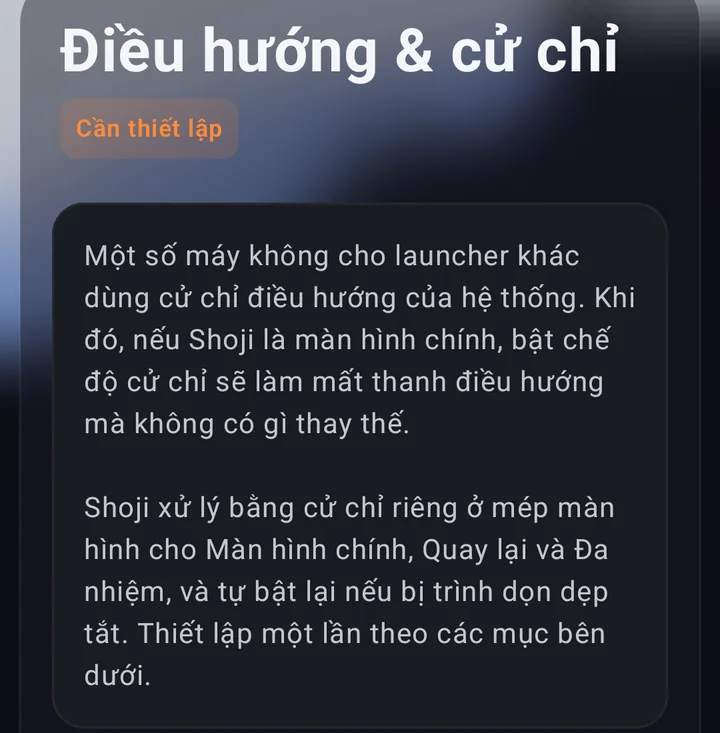
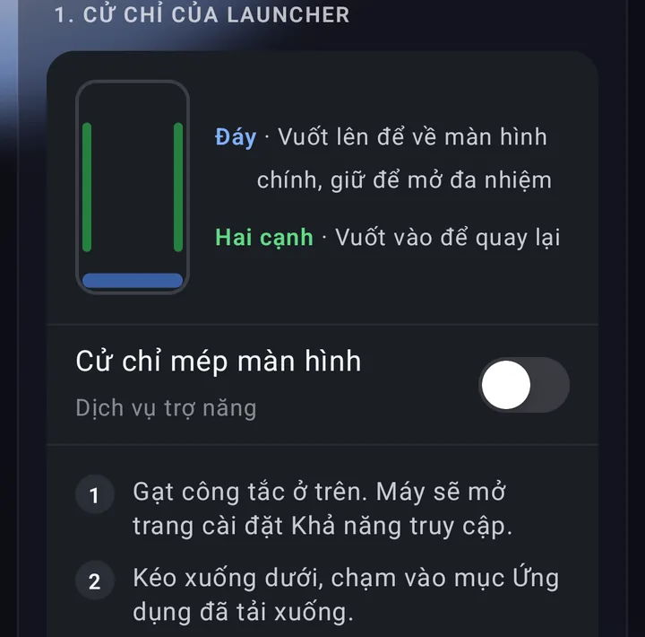
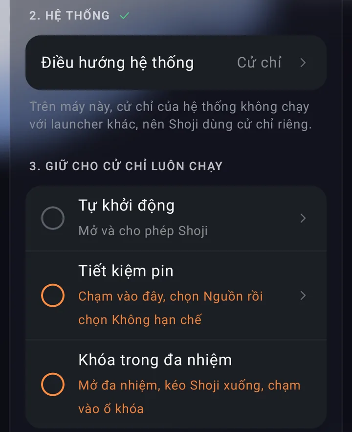
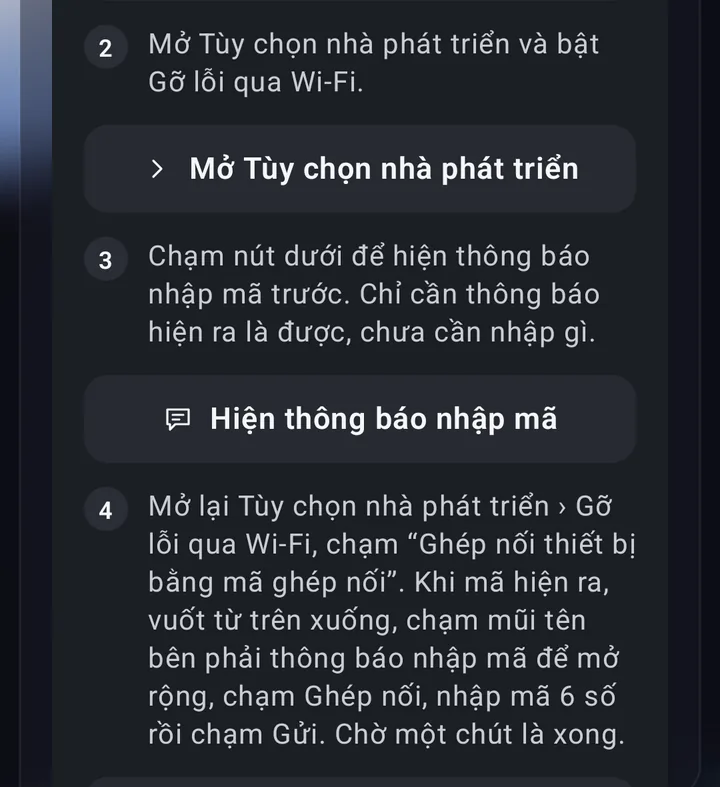
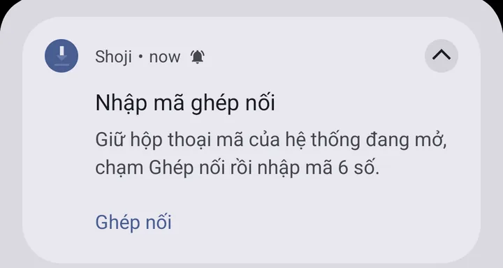
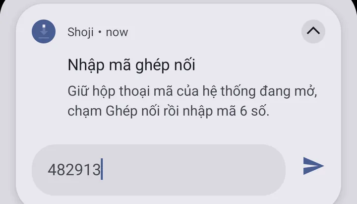

Vì sao Xiaomi mất cử chỉ khi đổi launcher
Trên HyperOS và MIUI, cử chỉ điều hướng chạy cùng launcher của hãng (System Launcher). Khi bạn đặt một launcher khác làm màn hình chính, máy hoặc không cho chọn Cử chỉ toàn màn hình, hoặc ẩn thanh nút mà không có gì thay thế, hoặc tự trả về ba nút sau mỗi lần khởi động lại.
Launcher của Xiaomi
Cử chỉ chạy bình thường, nhưng bạn phải dùng màn hình chính của hãng.
Launcher khác
Chỉ còn ba nút, hoặc không còn cách nào để về màn hình chính.
Shoji giải quyết ngay trong launcher: nó đặt ba dải cảm ứng mỏng ở đáy và hai cạnh màn hình, rồi biến cú vuốt trên đó thành thao tác của chính hệ thống.
- Đáy: vuốt lên để về màn hình chính, vuốt lên rồi giữ để mở đa nhiệm.
- Hai cạnh: vuốt vào từ trái hoặc phải để quay lại.
Các dải chỉ xuất hiện khi máy đang ở chế độ cử chỉ, nên không bao giờ đè lên thanh nút.
Cài đặt trong 5 bước
Mọi bước nằm trong Shoji › Cài đặt › Điều hướng & cử chỉ. Đó là một danh sách làm lần lượt, mỗi mục tự đánh dấu xong khi bạn hoàn thành.

-
Cài Shoji và đặt làm màn hình chính
Tải Shoji trên Google Play, mở app, đọc qua vài trang giới thiệu và chạm Bắt đầu. Máy sẽ hỏi chọn ứng dụng màn hình chính: chọn Shoji.
-
Bật Cử chỉ mép màn hình
Gạt công tắc Cử chỉ mép màn hình. Shoji giải thích và xin bạn đồng ý, rồi máy mở trang Khả năng truy cập:
- Kéo xuống dưới, chạm Ứng dụng đã tải xuống.
- Chạm Cử chỉ mép màn hình.
- Bật Sử dụng tính năng Cử chỉ mép màn hình, rồi quay lại Shoji.
Để nguyên mục Cử chỉ mép màn hình (dự phòng): Shoji tự dùng nó khi cần bật lại cử chỉ. Dịch vụ không đọc nội dung trên màn hình.

Mục 1: dải ở đáy và hai cạnh, công tắc Cử chỉ mép màn hình. -
Chuyển điều hướng hệ thống sang cử chỉ
Chạm mục Hệ thống trong danh sách. Trang Điều hướng hệ thống của máy mở ra: chọn Cử chỉ. Thanh nút biến mất và dải cử chỉ của Shoji thay chỗ ngay.
-
Giữ cử chỉ luôn chạy
Trình dọn dẹp của Xiaomi hay tắt app chạy nền. Làm ba việc nhỏ để Shoji được giữ lại:
- Tự khởi động: chạm mục này và cho phép Shoji.
- Tiết kiệm pin: chạm Nguồn, chọn Không hạn chế.
- Khóa trong đa nhiệm: mở đa nhiệm, kéo thẻ Shoji xuống và chạm vào ổ khóa.

Mục 2 đã xong (dấu tích), mục 3 còn các vòng tròn cam cần làm. -
Bật Tự khôi phục (một lần, Android 12 trở lên)
Bước này cho Shoji tự bật lại cử chỉ trong vòng một phút nếu bị dọn dẹp, và sau mỗi lần khởi động lại máy. Chạm Thiết lập ngay trên điện thoại và làm theo bốn bước Shoji hiện ra:
- Bật Tùy chọn nhà phát triển: vào Cài đặt › Giới thiệu điện thoại, chạm liên tiếp vào phiên bản HyperOS hoặc MIUI cho tới khi máy báo đã bật.
- Bật Gỡ lỗi qua Wi-Fi (máy cần đang kết nối Wi-Fi).
- Cho hiện thông báo nhập mã của Shoji.
- Mở lại Tùy chọn nhà phát triển › Gỡ lỗi qua Wi-Fi, chạm Ghép nối thiết bị bằng mã ghép nối. Khi mã hiện ra, vuốt từ trên xuống, chạm mũi tên bên phải thông báo để mở rộng, chạm Ghép nối, nhập 6 số rồi chạm Gửi.
Điện thoại tự ghép nối với chính nó để cấp cho Shoji quyền bật lại cử chỉ. Không có gì rời khỏi máy và không cần máy tính.

Các bước 2 đến 4 của Tự khôi phục, mỗi bước có nút mở đúng trang cài đặt. 
Mở rộng thông báo, chạm Ghép nối. 
Nhập 6 số của mã ghép nối rồi chạm nút gửi.
Khi khởi động lại máy
Shoji là màn hình chính ngay sau màn hình khóa, nên launcher của hãng không chen vào. Sau mỗi lần khởi động lại, HyperOS thường tự trả máy về ba nút; khi đã bật Tự khôi phục, Shoji chuyển lại sang cử chỉ và bật lại dải cử chỉ sau lần mở khóa đầu tiên. Bạn không phải làm gì.
Nếu chưa bật Tự khôi phục mà cử chỉ bị tắt, Shoji hiện thông báo Cử chỉ đã dừng; chạm vào đó để bật lại.
So với các cách khác
| Cách | Số app | Root | Máy tính | Sau khởi động lại |
|---|---|---|---|---|
| Dùng launcher của Xiaomi | 1 | Không | Không | Giữ cử chỉ, nhưng không đổi được launcher |
| Launcher khác + app cử chỉ riêng | 2 | Không | Thường cần ADB để ẩn thanh nút | Hay bị trình dọn dẹp tắt |
| Module root (Magisk, LSPosed) | 1–2 | Có, phải mở khóa bootloader | Có | Giữ cử chỉ |
| Shoji | 1 | Không | Không | Tự bật lại |
Câu hỏi thường gặp
Có cần root hay máy tính không?
Không. Shoji vẽ cử chỉ bằng dịch vụ trợ năng của chính nó. Bước Tự khôi phục dùng Gỡ lỗi qua Wi-Fi ngay trên điện thoại, không cần cáp hay máy tính.
Cử chỉ của Shoji có miễn phí không?
Có. Cử chỉ mép màn hình và Tự khôi phục luôn miễn phí. Gói Pro thêm cử chỉ trên màn hình chính (chạm đúp để khóa, vuốt hai ngón, vẽ hình để mở app), chế độ riêng tư và 12 kiểu icon; mọi tính năng Pro dùng thử 3 ngày từ khi cài.
Máy nào dùng được?
Điện thoại Xiaomi, Redmi và POCO chạy HyperOS hoặc MIUI, Android 9 trở lên. Tự khôi phục cần Android 12 trở lên. Trên máy hãng khác, cử chỉ của hệ thống vẫn giữ nguyên và dải cử chỉ của Shoji không hiện, trừ khi bạn tự bật.
Vì sao Shoji cần dịch vụ trợ năng?
Để vẽ các dải cử chỉ ở mép màn hình và thực hiện Về màn hình chính, Quay lại, Đa nhiệm. Nếu bạn đặt cử chỉ trên màn hình chính để khóa màn hình, chụp màn hình hay mở menu nguồn, dịch vụ cũng làm việc đó. Dịch vụ không đọc nội dung trên màn hình, và Shoji xin bạn đồng ý trước khi bật.
Có tốn pin không?
Rất ít. Khi màn hình bật, Shoji kiểm tra mỗi phút một lần xem cử chỉ còn chạy không. Khi tắt màn hình, việc kiểm tra giãn ra để máy ngủ yên.
Muốn gỡ Shoji thì làm thế nào?
Mở Shoji › Cài đặt › Gỡ cài đặt Shoji (cuối trang). Trước khi gỡ, chuyển Điều hướng hệ thống về Phím, nếu không máy có thể không còn cách nào để về màn hình chính. Trang này cho biết bạn đã làm bước đó chưa.
Một launcher gọn, có sẵn cử chỉ cho Xiaomi. Không quảng cáo, không cần tài khoản.
Tải Shoji trên Google Play